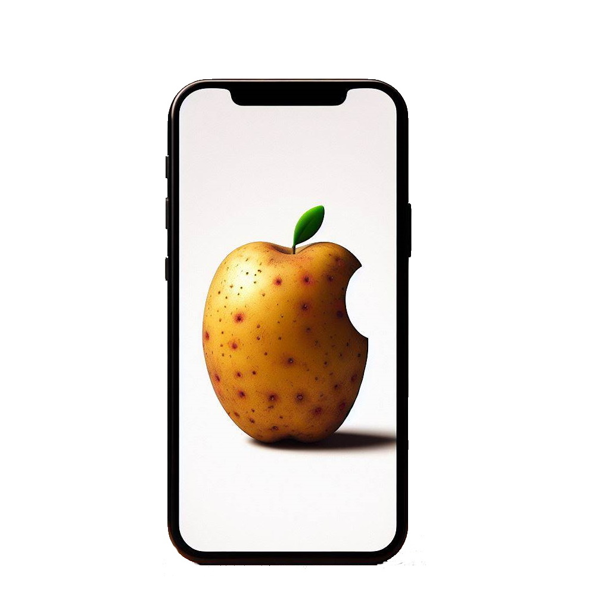
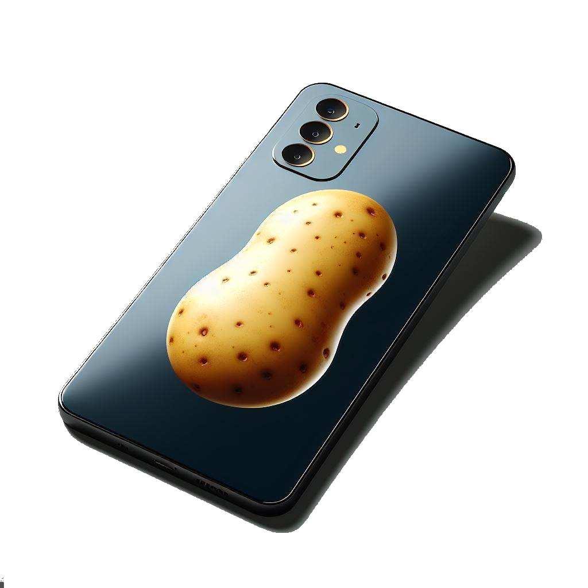

Freun Sie sich auf die neueste Generation von Smartphones – die Sweet Potato Reihe!
Mit innovativen Funktionen, atemberaubendem Design und leistungsstarker Technologie wird diese Serie Ihr mobiles Leben revolutionieren.
Was erwartet Sie in der Sweet Potato Reihe?
Schnelligkeit: Ein blitzschneller Prozessor, der all deine Anforderungen mühelos bewältigt.
Kamera-Exzellenz: Erlebe gestochen scharfe Fotos und Videos mit unserer fortschrittlichen Kameratechnologie.
Akku-Power: Länger unterwegs sein, ohne ständig nach der nächsten Steckdose suchen zu müssen.
Elegantes Design: Die Sweet Potato Reihe kombiniert Ästhetik und Funktionalität in einem schlanken Gehäuse.
Mehr Details und technische Spezifikationen finden Sie weiter unten.
Bleib dran – die Sweet Potato Reihe wird bald enthüllt!



Potato 15
Das Potato 15 ist so schnell wie eine Kartoffel.
Mit seinem scharfen Display und intelligenten Blitz können Sie gestochen scharfe Bilder aufnehmen, die so gut sind, dass Sie denken werden, dass Sie in einer Kartoffelkamera sind.
Und wenn Sie jemals in eine Situation geraten, in der Sie das Licht nicht optimal nutzen können, keine Sorge!
Das Potato 15 hat einen Augenblitz, der Ihnen hilft, das perfekte Bild zu machen.
Das Potato 15 ist auch ein Meister der Konnektivität. Mit seiner 4G-Unterstützung und WLAN-Konnektivität können Sie problemlos im Internet surfen und Ihre Lieblings-Apps nutzen.
Und wenn Sie jemals in einem Gebiet ohne WLAN-Abdeckung sind, keine Sorge! Das Potato 15 verfügt über eine starke Antenne, die Ihnen eine Verbindung ermöglicht.
Es ist so vielseitig wie eine Kartoffel, aber es ist alles andere als langweilig. Sie können es sogar frittieren, wenn Sie möchten!